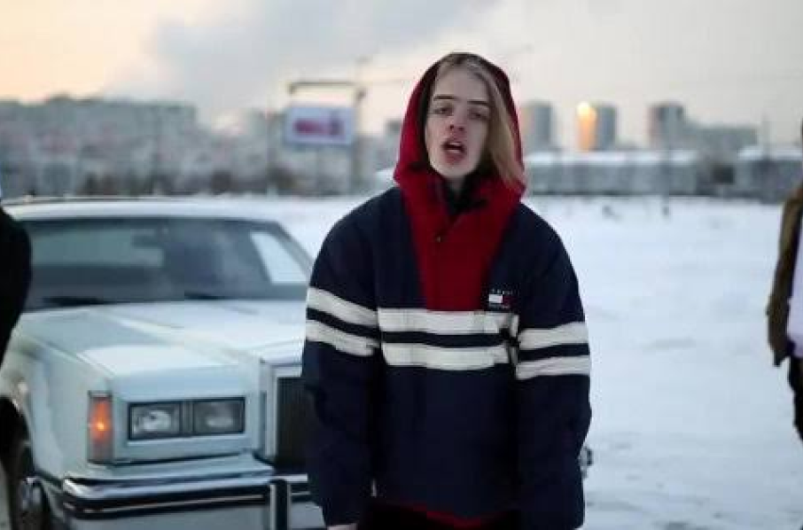

PHARAOH — сценическое имя Глеба Голубина, российского рэп-исполнителя и продюсера. Он стал заметной фигурой новой волны русского хип-хопа и одним из основателей объединения Dead Dynasty.

Его звучание менялось от мрачного клауд-рэпа к более мелодичным и масштабным релизам, сохраняя узнаваемую атмосферу и независимый характер.